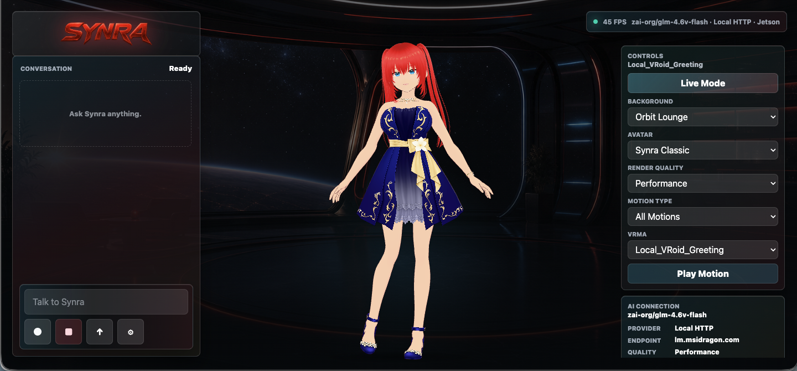
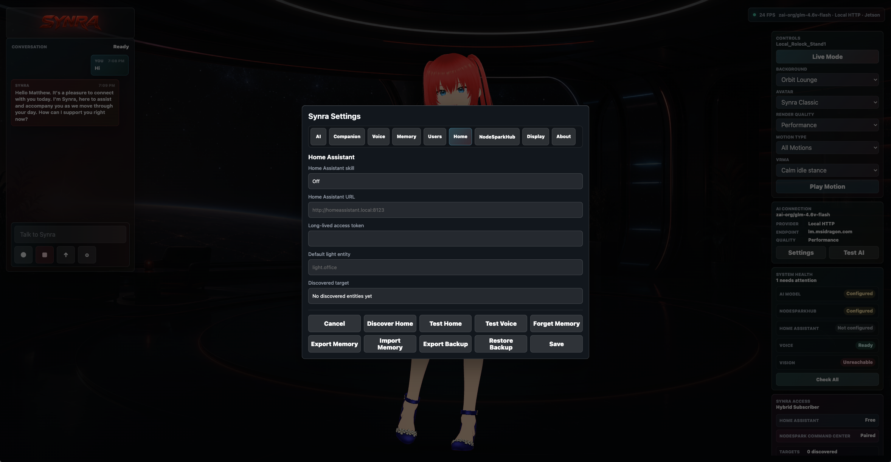

Alive, But Reliable
Synra keeps clear visual states for idle, listening, thinking, speaking, and offline moments so users know what just happened.
A standalone AI companion built from Synra's NodeSpark identity: voice, avatar presence, local or cloud models, memory, free smart-home tools, and premium NodeSpark Command Center skills.

Synra combines a full-screen companion stage, visible runtime controls, appliance-grade settings, and timestamped voice motion for a smarter Jetson assistant experience.


Synra keeps clear visual states for idle, listening, thinking, speaking, and offline moments so users know what just happened.
The Jetson path runs a lean local server, supports OpenAI-compatible model endpoints, and fails safely when a model or tool is not configured.
Camera, memory, smart-home, and future NodeSpark skills are explicit and user controlled, with confirmation gates for important actions.
Synra needs contributors who care about beautiful companion UI, Jetson performance, stable smart-home integrations, safer local memory, expressive motion, and better voice timing. The repo is set up for focused issues and pull requests.
Watch the roadmap for wake word, screen sleep, animation, vision, and appliance-quality setup work.
Open repositoryShare Jetson model, browser or kiosk path, FPS, logs, and screenshots without exposing secrets.
Use issue templatesImprove UI, docs, motion routing, voice behavior, Home Assistant, tests, and install reliability.
View pull requestsSynra is source-available for evaluation and contribution to the original project. Synra Classic, avatar assets, motions, screenshots, prompts, logos, character identity, and product trade dress may not be copied, resold, rebranded, redistributed, hosted, app-store uploaded, or used in a competing assistant without written permission.
The installer sets up the Synra web runtime, local API service, private model configuration, and the dedicated Electron kiosk shell that avoids snap Chromium confinement.
curl -fsSL https://raw.githubusercontent.com/synryzen/NodeSpark-Synra/main/scripts/install-jetson.sh | bash~/.config/synra-standalone.env with a local or remote OpenAI-compatible endpoint.
~/synra-jetson-station/scripts/start-electron-kiosk.sh for the verified 30 FPS path.